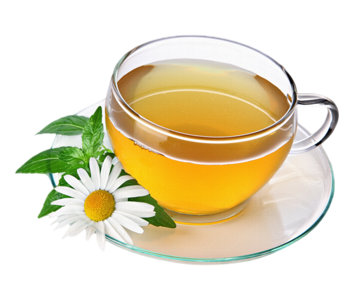

홍차 마시는 동아리, 홍작
홍작 소개
홍작이란?
홍작 활동
홍작 로고
홍작 지원
차 즐기기
Green Tea
Black Tea
Herb Tea
Others
홍차의 역사
홍차의 종주국이 영국이 아니라고?
홍차가 바꾼 세계사의 지평
홍차 문화
영국인과 티타임 문화
문화인터뷰
차 브랜드
Twinings
F & M
Whittard
Harrods
East India Company
Etc.
Tableware
Bakery
Herb Tea
허브티는 이름에서도 볼 수 있듯 허브를 재료로 한 차로 그 종류와 제작방식이 다양하다. 국내에서는 히비스커스, 루이보스, 디톡스티 등 디카페인 계열 허브티가 유명하며 건강이나 미용을 목적으로 섭취하기도 한다. 허브티는 차 종류 중 유일하게 갓 끓인 물로 오래 우리면서 즐길 수 있는 차이다. 허브티를 즐기는 방법은 구매한 차의 설명이나 판매 업체의 공식 음용법을 따르는 것이 제일 권장된다.

Copyright © HONGJAK_2022_All Rights Reserved.